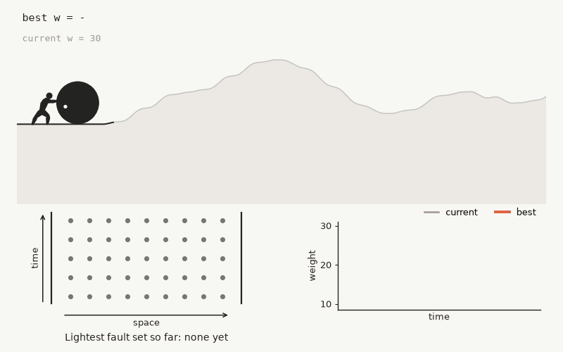

Open-source software
Sisyphus: a fast circuit-level distance estimator for quantum codes

Quantum error correction encodes logical information redundantly across many physical qubits, and this redundancy is one of the dominant costs of fault-tolerant quantum computing. In the surface code, each logical qubit needs its own patch of physical qubits, whose size grows with the square of the distance. Recent advances in quantum low-density parity-check (qLDPC) codes have cut the cost of quantum memory dramatically. They combine sparse checks with rates as high as 1/2 and high relative distance. The price is block length. The best codes span a few thousand qubits, which makes finding good syndrome-extraction circuits for them a challenge.
These are CSS codes, defined by X-type and Z-type parity checks on a few qubits each. An error that anticommutes with a check flips its outcome, and the pattern of flipped checks, the syndrome, is passed to a decoder. The code distance d is the minimum weight of an error that commutes with every check yet acts nontrivially on the encoded qubits.
The code distance assumes perfect measurements. In practice the checks are measured repeatedly by a syndrome-extraction circuit, in which an ancilla qubit for each check interacts with the check's data qubits through two-qubit gates and is then measured. Faults anywhere in the circuit are caught by detectors, parities of measurement outcomes that are deterministic without noise, such as a check's outcome in consecutive rounds. At low physical error rates the logical error rate is then governed by the circuit-level distance, the fewest faults that flip a logical observable without triggering any detector. It is at most d, and a poorly chosen circuit can fall well below it.
For the surface code, distance-preserving circuits have long been known. For high-rate qLDPC codes they are not, and even evaluating one candidate is a substantial computation. Stim converts a noisy circuit into a detector error model, a sparse binary matrix with one column per fault mechanism that records the detectors and logical observables it flips. For instance, a 14-round memory experiment (repeated syndrome extraction followed by a final readout) on the [[2304,1156,14]] affine permutation matrix (APM) code[1, 2] has about 180,000 such columns after merging equivalent faults. Finding the lightest undetected logical fault set is NP-hard, and at this scale existing estimators often return bounds far above the true value.
Sisyphus is an open-source estimator of circuit-level and CSS code distance built for this regime. On the largest circuits in my benchmarks it finds lighter faults than other distance estimators[3–6], typically within seconds, and on two standard benchmark circuits it improves on the best previously reported bounds. It is also fast enough to act as a filter inside a larger search, as in upcoming work on optimal-depth syndrome-extraction circuits described in the second half of this post. I am grateful to the Unitary Foundation for supporting its development through a microgrant.
Sisyphus is on PyPI. It currently supports estimation of code distances and syndrome-extraction circuit fault distances for quantum CSS codes.
pip install sisyphus-qecCircuit-level distance
Circuits typically lose distance through hook errors (Figure 2). An ancilla qubit interacts with its check's data qubits in sequence, so a single fault on the ancilla qubit partway through spreads to every data qubit it touches afterwards. A few such correlated errors can combine into a logical operator with fewer than d faults. Which qubits are hit depends on the gate order, so circuits for the same code that differ only in scheduling can have quite different circuit-level distances.
Writing the detector error model as binary matrices H (detectors by faults) and L (observables by faults), the circuit-level distance is the minimum weight of a vector c with Hc = 0 and Lc ≠ 0. The code distance has exactly the same form. For X-type logical operators of a CSS code, H is the Z-check matrix and the rows of L are the Z-type logical operators, so Hc = 0 says that c commutes with every Z check and Lc ≠ 0 says that it acts nontrivially on the encoded qubits. Sisyphus solves this general distance-finding problem for any H and L.
Heuristic searches for this minimum give upper bounds. A fault set lighter than d certifies that a circuit loses distance and can be checked independently in Stim, while failing to find one is only evidence. This asymmetry is central to the application in the second half of this post, where I use Sisyphus to quickly eliminate syndrome-extraction circuits of low fault distance by finding upper bounds that fall below the code distance.
How Sisyphus searches
The vectors with Hc = 0 form the kernel of H, a linear space over GF(2). If the rows of a matrix G form a basis of the kernel, every solution is a sum of some subset of the rows of G. (For a code, G is a generator matrix.) Such a basis is easy to compute, but its rows are typically heavy, and the light solutions are hidden among the 2k sums of its k rows. For the codes and circuits of interest here k is in the hundreds to thousands or more, so enumerating these sums is hopeless.
Information-set decoding (ISD) searches through these sums by changing the basis. One chooses k columns, called the information set, and row-reduces G so that these columns form an identity matrix. Every row then has a single 1 on the information set. A solution with only one 1 there must be one of the rows, and a solution with two or three is the sum of two or three rows, so a light solution that largely avoids the information set can be read off directly. Rather than drawing a fresh information set each time, one can swap one column in and one out, which costs a single pivot instead of a full elimination. The search then becomes a walk over information sets (Figure 3). This is the approach of Prange's algorithm[7] and its later variants[8–10], and of several open-source distance estimators for quantum codes, including the GAP package QDistRnd[3], the C program dist-m4ri[4], which also handles circuits, and the Python package QDistEvol[5]. Sisyphus builds on them.
On large circuit-level instances an unguided walk spends most of its time far from the light solutions. Sisyphus changes the walk in three ways.
Learned column priorities. Each walk keeps a score for every fault mechanism that rises when the fault appears in a light solution and decays otherwise. High-scoring columns are kept out of the information set, where solutions supported on them can be read off, so the walk concentrates where light solutions have been found and light solutions lead to lighter ones.
Partial restarts. A walk guided only by its scores settles into a local optimum. When a walk stalls, Sisyphus resets the scores of a random 30% of the columns of its best solution and restarts it in a different region of the search space. This repeated climbing and falling back gives the tool its name (Figure 1). Many independent searches run in parallel.
Time windows. In a memory experiment, minimum-weight faults typically span one to three rounds. Sisyphus detects the period of the detector error model and searches windows of consecutive detectors 10 to 100 times smaller than the full model. Any solution in a window is a solution of the full circuit. An adaptive scheduler allocates time among windows by the weights they produce and their cost.
The GF(2) linear algebra is bit-packed and compiled with Numba, and only the non-identity part of the systematic matrix is stored, saving roughly a factor of ten on circuit-level instances. Every candidate is checked against 64 random combinations of the rows of L, which separate genuine logical faults from trivial solutions (stabilizers, for a code), so a trivial solution is never reported. The README has the details. The defaults were chosen by equal-wall-clock comparisons across codes and circuits of very different sizes and should rarely need adjusting.
Benchmarks
I compared Sisyphus with three other open-source distance estimators on identical instances. These are dist-m4ri[4], a C program for codes and circuit-level models, QDistEvol[5], a Python package that evolves a population of information sets, and sQetch[6], an estimator that runs on GPUs. Each CPU tool had 16 cores of one node, sQetch had an NVIDIA A100, and each tool had three runs per instance. Figure 4 shows the four largest circuit-level instances.
Show the data
| circuit | faults | Sisyphus | dist-m4ri | QDistEvol | sQetch |
|---|---|---|---|---|---|
| double gross [[288,12,18]], 18 rounds | 26,208 | 16 | 18 | 31 | 23 |
| [[360,12,24]], 24 rounds | 43,560 | 21 | 22 | 63 | 39* |
| [[756,16,34]], 34 rounds | 129,276 | 31 | 45 | out of memory | too large |
| APM [[4608,2308,20]], 1 round | 29,952 | 20 | 490 | 574 | 174 |
* sQetch's codeword recovery did not return a valid fault set for this weight.
The advantage grows with problem size. On the 34-round memory experiment of the [[756,16,34]] bivariate bicycle code, Sisyphus finds a weight-31 fault set within a second, while dist-m4ri is still at 45 to 50 after an hour. On one round of syndrome extraction for the [[4608,2308,20]] APM code, Sisyphus reaches the code distance of 20 and the other tools remain above 170.
For the [[756,16,34]] and [[360,12,24]] memory experiments, the faults that Sisyphus found are the lightest reported to date for these circuits of the dist-m4ri benchmark set. The witnesses are in the repository and can be verified against the original circuits with Stim.
| benchmark circuit | basis | previously reported | Sisyphus |
|---|---|---|---|
bb_756_16_34_si1000_r34 | X | none | 31 |
bb_360_12_24_si1000_r24 | X | 23 | 21 |
bb_360_12_24_si1000_r24 | Z | 88 | 21 |
On smaller instances, up to a few thousand qubits or 104 faults, every tool that reaches the target does so in about a second, and dist-m4ri is usually fastest thanks to its lower start-up cost. Sisyphus is aimed at large instances. It is also used by the Unitary Foundation's QEC Challenge leaderboard to bound the circuit-level distance of submitted circuits.
Optimal-depth syndrome extraction for ultra-high-rate codes
Sisyphus grew out of a forthcoming paper on syndrome-extraction circuits for ultra-high-rate codes. APM codes, GALA codes[11] and Mitten codes[6] reach rates of up to 1/2 with hundreds of logical qubits. Existing circuits for them measure the X checks and then the Z checks. Interleaving the two brings the circuit down to its optimal depth, which halves each round for the rate-1/2 codes and reduces idling noise. The catch is that most interleaved gate orders lose distance to hook errors, and there are far too many of them to study each one carefully.
Certifying that a schedule keeps the full distance is out of reach at these sizes, but rejecting one only takes a single fault set lighter than d, which is exactly what Sisyphus finds. A logical fault set of a short memory experiment is also one of every longer experiment, so the search starts with one-round circuits and moves to longer ones only for the schedules that survive (Figure 5). Most bad schedules are rejected within seconds to minutes, which makes it possible to screen thousands of candidates per code.
The paper will present the resulting circuits. Results for which we already have circuits include the following.
- Optimal-depth circuits, half the depth of coloration circuits, that keep the full distance of the [[1152,580,12]] and [[2304,1156,14]] APM codes and the [[1752,880,14]] and [[2232,1120,16]] GALA codes. Coloration circuits for these codes lose up to three units of distance within a single round.
- Optimal-depth circuits for the Mitten codes from [[500,100,16]] to [[975,195,24]] that keep the full distance for all but [[780,156,22]], where they reach 21. The published sequential circuits lose up to eight units within a single round.
- Layouts of these circuits on a zoned neutral-atom array, with explicit atom-movement programs.
“Keep the full distance” here means that extended Sisyphus searches over many rounds found nothing lighter, which is strong evidence but not proof. The circuits and the search code are already in the Sisyphus repository.
Limitations
- Sisyphus provides upper bounds only. Lower bounds require an exact method, such as the connected-cluster search in the distance estimator dist-m4ri.
- Input matrices are dense before packing, so the largest circuit models need several gigabytes of memory, about 1.7 GB for a 13,230 × 129,276 model.
- Code distances are currently supported only for CSS codes. A future version will support non-CSS Pauli stabilizer codes.
Getting started
Install with pip install sisyphus-qec. The following bounds the circuit-level
distance of a Stim circuit.
import stim
from sisyphus_qec import dem_to_matrices, side_distance, lift_columns, verify_fault_set
circuit = stim.Circuit.from_file("memory_experiment.stim")
dem = circuit.detector_error_model(decompose_errors=False)
H, L, columns = dem_to_matrices(dem) # detectors x faults, observables x faults
res = side_distance(H, None, pair_rows=L, num_trials=10_000_000,
num_workers=16, time_limit=600)
faults = lift_columns(res.witness, columns)
assert verify_fault_set(dem, faults) # independent check on the DEM
print("circuit distance <=", res.distance)
For CSS codes, css_distance(Hx, Hz) takes the check matrices directly. Examples,
benchmark witnesses and the syndrome-extraction search are in the
GitHub repository. I am especially
interested in hard instances where existing tools struggle, and issues and pull requests are
welcome. If you use Sisyphus in published work, please cite it together with the distance
estimator QDistRnd and the
distance-finding paper of Webster, Jacob and
Higgott, whose methods and benchmarks it builds on.
Acknowledgements
I am grateful to the Unitary Foundation for the microgrant that supported this work, and to the Anthropic AI for Science program for its support. Sisyphus was developed in part using models from the Claude family. I thank Nishad Maskara, Oscar Higgott, Tomas Jochym-O'Connor, Andi Gu, Nazli Ugur Koyluoglu, Rohan Mehta and Farrokh Labib for valuable discussions, and Nazli in particular for suggesting the name Sisyphus. Part of Sisyphus was developed while I was an employee at Google Research.
References
- K. Kasai, “Breaking the orthogonality barrier in quantum LDPC codes,” Quantum 10, 2205 (2026), arXiv:2601.08824.
- C. Zhao, C. Duckering, A. Gu, N. Maskara and H. Zhou, “Towards ultra-high-rate quantum error correction with reconfigurable atom arrays,” arXiv:2604.16209 (2026).
- L. P. Pryadko, V. A. Shabashov and V. K. Kozin, “QDistRnd: A GAP package for computing the distance of quantum error-correcting codes,” Journal of Open Source Software 7, 4120 (2022). GitHub
- L. P. Pryadko and W. Zeng, dist-m4ri, v0.14.7, github.com/QEC-pages/dist-m4ri.
- M. Webster, A. Jacob and O. Higgott, “Distance-finding algorithms for quantum codes and circuits,” arXiv:2603.22532 (2026). Introduces QDistEvol.
- A. Bhardwaj, M. Ma, N. Meister, R. King, D. Bluvstein, J. Preskill, M. Cain, Q. Xu and H.-Y. Huang, “High-rate qLDPC processors,” arXiv:2607.28795 (2026). Introduces sQetch.
- E. Prange, “The use of information sets in decoding cyclic codes,” IRE Transactions on Information Theory 8, 5–9 (1962).
- P. J. Lee and E. F. Brickell, “An observation on the security of McEliece's public-key cryptosystem,” EUROCRYPT 1988, LNCS 330, 275–280 (1988).
- J. Stern, “A method for finding codewords of small weight,” Coding Theory and Applications, LNCS 388, 106–113 (1989).
- A. Canteaut and F. Chabaud, “A new algorithm for finding minimum-weight words in a linear code,” IEEE Transactions on Information Theory 44, 367–378 (1998).
- W. Yang, C. Duckering and A. Dua, “Designer codes from GALA: compact, self-dual, and rate-1/2 QEC on reconfigurable atom arrays,” arXiv:2608.07431 (2026).